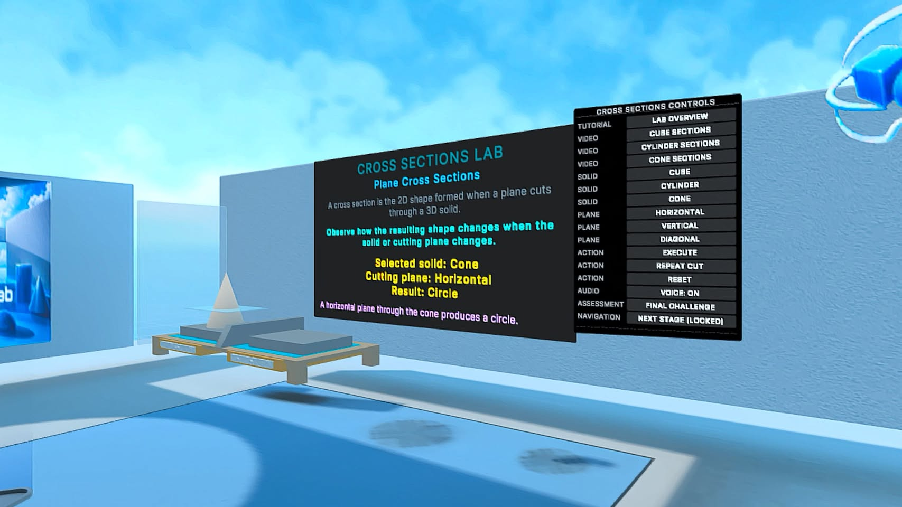
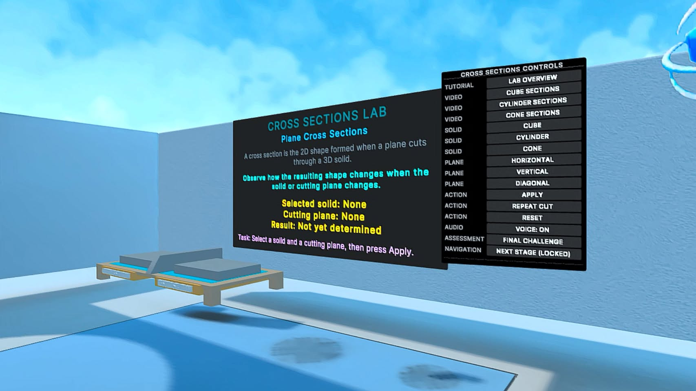

الوسائط والجداول وسجل المواد
ابحث بكلمتين أو أكثر للوصول إلى القسم، تعمل الروابط دون الحاجة إلى البحث.
قائمة الجداول #
جدول (1): تحوّل مشكلة التدريس إلى متطلبات تصميمية.
جدول (2): مقارنة الدراسات السابقة الأقرب إلى المشروع.
جدول (3): مقارنة التطبيقات والمنصات المتاحة.
جدول (4): مراحل تطور المشروع والقرارات الناتجة عنها.
جدول (5): المكونات البرمجية والتربوية في البنية الحالية.
جدول (6): مصفوفة التحقق الوظيفي وحالة كل وظيفة.
جدول (7): الإجابة عن أسئلة البحث.
جدول (8): خطة التطوير والنشر المستقبلية.
قراءة الدليل التطبيقي #
تعرض هذه الصفحة الوسائط المرفقة كما صنّفها سجل المواد. المقاطع واللقطات التالية توثق بنية التطبيق السابقة ومحتواه، لم تُرفق بعد لقطة أو تسجيل محدد الهوية للبناء المدمج الأحدث.
للمشهد المدمج راجع الملحق (ي)، وللتوثيق الداخلي لإصدار يوليو راجع الملحق (ط).
مقاطع توثيق التطبيق #
التهيئة والتدريب على التحكم ثم دخول مختبر المجسّمات
المصدر: 01_Onboarding_Practice(1).mp4
فتح أو تنزيل الفيديواستكشاف المجسّمات وخصائصها
المصدر: 02_3D_Solids_Lab(1).mp4
فتح أو تنزيل الفيديولوحة التكريم داخل البيئة
المصدر: 03_Tribute_Panel(1).mp4
فتح أو تنزيل الفيديومختبر التحويلات الهندسية
المصدر: 04_Geometric_Transformations(1).mp4
فتح أو تنزيل الفيديوتحديات التحويلات الثلاثة ومؤشر الإنجاز
المصدر: 05_Transformation_Challenges(1).mp4
فتح أو تنزيل الفيديوتجربة المقاطع المستوية الناتجة من قطع المجسّمات
المصدر: 06_Cross_Sections_Experiment(1).mp4
فتح أو تنزيل الفيديومركز تعلم المقاطع والتحدي والتغذية الراجعة
المصدر: 07_Cross_Sections_Learning_Center(1).mp4
فتح أو تنزيل الفيديوالمقاطع بصوتها الأصلي. ضُغط الفيديوهان 04 و05 للنشر مع الحفاظ على الدقة والمدة والصوت، يسجل ملف بيانات الفيديو بصمتي الأصل ونسخة النشر. لم يُنجز تفريغ نصي مكافئ أو مراجعة سمعية شاملة، يُضافان في تحديث لاحق.
لقطات منتقاة للمقاطع الناتجة عن القطع #

مقاطع المخروط: مستوى رأسي ونتيجة مثلث
لقطة توثيقية من مواد مختبر المقاطع المتاحة: لقطة مختبر المقاطع تظهر اختيار المخروط والمستوى الرأسي ونتيجة Triangle على شاشة المعلومات. تاريخ الالتقاط ورقم إصدارها غير مثبتين، لا تُنسب إلى البناء المدمج الأحدث.
IMG-S-001
مقاطع المكعب: مستوى أفقي ونتيجة مربع
لقطة توثيقية من مواد مختبر المقاطع المتاحة: لقطة مختبر المقاطع تظهر اختيار المكعب والمستوى الأفقي ونتيجة Square. تاريخ الالتقاط ورقم إصدارها غير مثبتين، لا تُنسب إلى البناء المدمج الأحدث.
IMG-S-002

مقاطع المخروط: مستوى أفقي ونتيجة دائرة
لقطة توثيقية من مواد مختبر المقاطع المتاحة: لقطة مختبر المقاطع تظهر اختيار المخروط والمستوى الأفقي ونتيجة Circle. تاريخ الالتقاط ورقم إصدارها غير مثبتين، لا تُنسب إلى البناء المدمج الأحدث.
IMG-S-003

مقاطع المجسمات: حالة البداية
لقطة توثيقية من مواد مختبر المقاطع المتاحة: واجهة مختبر المقاطع قبل اختيار مجسم أو مستوى، Solid=None وPlane=None وResult=Not yet determined. تاريخ الالتقاط ورقم إصدارها غير مثبتين، لا تُنسب إلى البناء المدمج الأحدث.
IMG-S-007
مقاطع الأسطوانة: مستوى مائل ونتيجة قطع ناقص
لقطة توثيقية من مواد مختبر المقاطع المتاحة: واجهة مختبر المقاطع تظهر اختيار الأسطوانة والمستوى المائل ونتيجة Ellipse. تاريخ الالتقاط ورقم إصدارها غير مثبتين، لا تُنسب إلى البناء المدمج الأحدث.
IMG-S-010
مقاطع الأسطوانة: مستوى رأسي ونتيجة مستطيل
لقطة توثيقية من مواد مختبر المقاطع المتاحة: واجهة مختبر المقاطع تظهر اختيار الأسطوانة والمستوى الرأسي ونتيجة Rectangle. تاريخ الالتقاط ورقم إصدارها غير مثبتين، لا تُنسب إلى البناء المدمج الأحدث.
IMG-S-011
مقاطع الأسطوانة: مستوى أفقي ونتيجة دائرة
لقطة توثيقية من مواد مختبر المقاطع المتاحة: واجهة مختبر المقاطع تظهر اختيار الأسطوانة والمستوى الأفقي ونتيجة Circle. تاريخ الالتقاط ورقم إصدارها غير مثبتين، لا تُنسب إلى البناء المدمج الأحدث.
IMG-S-013
مقاطع المكعب: مستوى مائل ونتيجة مستطيل
لقطة توثيقية من مواد مختبر المقاطع المتاحة: واجهة مختبر المقاطع تظهر اختيار المكعب والمستوى المائل ونتيجة Rectangle للحالة المصممة في التطبيق. تاريخ الالتقاط ورقم إصدارها غير مثبتين، لا تُنسب إلى البناء المدمج الأحدث. النتيجة تخص حالة القطع المعروضة في التطبيق.
IMG-S-014دليل الجداول والإطارات والسجلات #
| المعرف | العنوان والرابط | النوع | الموضع |
|---|---|---|---|
| T001 | بيانات الغلاف | جدول أو سجل | عن البحث والباحث |
| T002 | إطار منهجي | إطار منهجي | عن البحث والباحث |
| T003 | جدول المحتويات | فهرس مطبوع | فهرس البحث في النسخة المصدرية |
| T004 | إطار مشكلة البحث | إطار منهجي | الفصل الأول |
| T005 | جدول (1): من المشكلة التعليمية إلى المتطلب التصميمي | جدول أو سجل | الفصل الأول |
| T006 | إطار سؤال البحث | إطار منهجي | الفصل الأول |
| T007 | حدود البحث | جدول أو سجل | الفصل الأول |
| T008 | جدول (2): مقارنة الدراسات السابقة الأقرب إلى المشروع | جدول أو سجل | الفصل الثاني |
| T009 | جدول (3): مقارنة التطبيقات والمنصات المتاحة حتى 28 تموز/يوليو 2026 | جدول أو سجل | الفصل الثاني |
| T010 | إطار قرار منهجي | إطار منهجي | الفصل الثالث |
| T011 | جدول (4): مراحل تطور المشروع والقرار التربوي/التقني الناتج | جدول أو سجل | الفصل الثالث |
| T012 | جدول (5): مكونات برمجية وتربوية موثقة في المشروع | جدول أو سجل | الفصل الثالث |
| T013 | جدول (6): مصفوفة التحقق الوظيفي وحالة الوظائف حتى 29/7/2026 | جدول أو سجل | الفصل الرابع |
| T014 | جدول (7): خلاصة الإجابة عن أسئلة البحث | جدول أو سجل | الفصل الرابع |
| T015 | جدول (8): خارطة الطريق المقترحة | جدول أو سجل | الفصل الخامس |
| T016 | نموذج سجل تطوير | جدول أو سجل | الملحق (و) |
| T017 | إطار بيان نشر | إطار منهجي | الملحق (ز) |
| T018 | مقارنة منهجية | جدول أو سجل | الملحق (ح) |
| T019 | بيانات إصدار Alpha v1.0.0 | جدول أو سجل | الملحق (ط) |
| T020 | متطلبات تقنية للإصدار | جدول أو سجل | الملحق (ط) |
| T021 | المسار التعليمي | جدول أو سجل | الملحق (ط) |
| T022 | تخطيط صور الكرة والأسطوانة | تخطيط صور | الملحق (ط) |
| T023 | بيانات الفيديو التاريخي | جدول أو سجل | الملحق (ط) |
سجل المواد المرفقة #
| المعرف | النوع | الوصف | المصدر | الحالة |
|---|---|---|---|---|
| IMG-L-001 | images | التفاعل والإمساك بالمجسمات داخل المختبر | images.zip :: images/01_VR_Interaction_2560x1440.png | مرشح للانتقاء مع توثيق المصدر والإصدار |
| IMG-L-002 | images | التفاعل والإمساك بالمجسمات داخل المختبر | images.zip :: images/28-07-2026-01.png | مرشح للانتقاء مع توثيق المصدر والإصدار |
| IMG-L-003 | images | التفاعل والإمساك بالمجسمات داخل المختبر | images.zip :: images/28-07-2026-02.png | مرشح للانتقاء مع توثيق المصدر والإصدار |
| IMG-L-004 | images | التفاعل والإمساك بالمجسمات داخل المختبر | images.zip :: images/28-07-2026-03.png | مرشح للانتقاء مع توثيق المصدر والإصدار |
| IMG-L-005 | images | هوية التطبيق وأغلفته | images.zip :: images/cover Apps.png | مرشح للانتقاء مع توثيق المصدر والإصدار |
| IMG-L-006 | images | مختبر المجسمات وخصائصها | images.zip :: images/Design and Development of an Immersive Interactive Virtual Reality Environment.jpeg | مرشح للانتقاء مع توثيق المصدر والإصدار |
| IMG-L-007 | images | هوية التطبيق وأغلفته | images.zip :: images/geometry-vr-lab.png | مرشح للانتقاء مع توثيق المصدر والإصدار |
| IMG-L-008 | images | هوية التطبيق وأغلفته | images.zip :: images/GeometryVRLab_Foreground_180x180.png | مرشح للانتقاء مع توثيق المصدر والإصدار |
| IMG-L-009 | images | هوية التطبيق وأغلفته | images.zip :: images/GeometryVRLab_Icon_512x512.png | مرشح للانتقاء مع توثيق المصدر والإصدار |
| IMG-L-010 | images | التفاعل والإمساك بالمجسمات داخل المختبر | images.zip :: images/New Images/01_VR_Interaction_2560x1440.png | مرشح للانتقاء مع توثيق المصدر والإصدار |
| IMG-L-011 | images | مختبر المجسمات وخصائصها | images.zip :: images/New Images/02_Lab_Overview_2560x1440.png | مرشح للانتقاء مع توثيق المصدر والإصدار |
| IMG-L-012 | images | مختبر المجسمات وخصائصها | images.zip :: images/New Images/03_Cube_Learning_2560x1440.png | مرشح للانتقاء مع توثيق المصدر والإصدار |
| IMG-L-013 | images | مختبر المجسمات وخصائصها | images.zip :: images/New Images/04_Sphere_Learning_2560x1440.png | مرشح للانتقاء مع توثيق المصدر والإصدار |
| IMG-L-014 | images | مختبر المجسمات وخصائصها | images.zip :: images/New Images/05_Cylinder_Learning_2560x1440.png | مرشح للانتقاء مع توثيق المصدر والإصدار |
| IMG-L-015 | images | هوية التطبيق وأغلفته | images.zip :: images/New Images/06_GeometryVRLab_1254x1254.png | مرشح للانتقاء مع توثيق المصدر والإصدار |
| IMG-L-016 | images | هوية التطبيق وأغلفته | images.zip :: images/New Images/07_GeometryVRLab_1050x1498.png | مرشح للانتقاء مع توثيق المصدر والإصدار |
| IMG-L-017 | images | هوية التطبيق وأغلفته | images.zip :: images/New Images/08_GeometryVRLab_1254x1254.png | مرشح للانتقاء مع توثيق المصدر والإصدار |
| IMG-L-018 | images | هوية التطبيق وأغلفته | images.zip :: images/New Images/GeometryVRLab_Cover_Portrait_1008x1440.png | مرشح للانتقاء مع توثيق المصدر والإصدار |
| IMG-L-019 | images | هوية التطبيق وأغلفته | images.zip :: images/New Images/GeometryVRLab_Cover_Square_1440x1440.png | مرشح للانتقاء مع توثيق المصدر والإصدار |
| IMG-L-020 | images | شاشات الفيديو التعليمية داخل المختبر | images.zip :: images/WhatsApp Image 2026-07-23 at 22.08.50.jpeg | مرشح للانتقاء مع توثيق المصدر والإصدار |
| IMG-L-021 | images | شاشات الفيديو التعليمية داخل المختبر | images.zip :: images/WhatsApp Image 2026-07-23 at 22.09.24.jpeg | مرشح للانتقاء مع توثيق المصدر والإصدار |
| IMG-L-022 | images | شاشات الفيديو التعليمية داخل المختبر | images.zip :: images/WhatsApp Image 2026-07-23 at 22.09.37.jpeg | مرشح للانتقاء مع توثيق المصدر والإصدار |
| IMG-L-023 | images | شاشات الفيديو التعليمية داخل المختبر | images.zip :: images/WhatsApp Image 2026-07-23 at 22.10.11.jpeg | مرشح للانتقاء مع توثيق المصدر والإصدار |
| IMG-L-024 | images | مختبر المجسمات وخصائصها | images.zip :: images/WhatsApp Image 2026-07-23 at 22.10.24.jpeg | مرشح للانتقاء مع توثيق المصدر والإصدار |
| IMG-L-025 | images | مختبر المجسمات وخصائصها | images.zip :: images/WhatsApp Image 2026-07-23 at 22.10.37.jpeg | مرشح للانتقاء مع توثيق المصدر والإصدار |
| IMG-L-026 | images | مختبر المجسمات وخصائصها | images.zip :: images/WhatsApp Image 2026-07-23 at 22.10.47.jpeg | مرشح للانتقاء مع توثيق المصدر والإصدار |
| IMG-L-027 | images | التفاعل والإمساك بالمجسمات داخل المختبر | images.zip :: images/WhatsApp Image 2026-07-23 at 23.55.23.jpeg | مرشح للانتقاء مع توثيق المصدر والإصدار |
| IMG-L-028 | images | التفاعل والإمساك بالمجسمات داخل المختبر | images.zip :: images/WhatsApp Image 2026-07-23 at 23.55.38.jpeg | مرشح للانتقاء مع توثيق المصدر والإصدار |
| IMG-L-029 | images | التفاعل والإمساك بالمجسمات داخل المختبر | images.zip :: images/WhatsApp Image 2026-07-23 at 23.55.50.jpeg | مرشح للانتقاء مع توثيق المصدر والإصدار |
| IMG-L-030 | images | التفاعل والإمساك بالمجسمات داخل المختبر | images.zip :: images/WhatsApp Image 2026-07-23 at 23.56.11.jpeg | مرشح للانتقاء مع توثيق المصدر والإصدار |
| IMG-L-031 | images | التفاعل والإمساك بالمجسمات داخل المختبر | images.zip :: images/WhatsApp Image 2026-07-23 at 23.56.24.jpeg | مرشح للانتقاء مع توثيق المصدر والإصدار |
| IMG-L-032 | images | التفاعل والإمساك بالمجسمات داخل المختبر | images.zip :: images/WhatsApp Image 2026-07-23 at 23.56.38.jpeg | مرشح للانتقاء مع توثيق المصدر والإصدار |
| IMG-L-033 | images | التفاعل والإمساك بالمجسمات داخل المختبر | images.zip :: images/WhatsApp Image 2026-07-23 at 23.56.49.jpeg | مرشح للانتقاء مع توثيق المصدر والإصدار |
| IMG-L-034 | images | التفاعل والإمساك بالمجسمات داخل المختبر | images.zip :: images/WhatsApp Image 2026-07-23 at 23.57.02.jpeg | مرشح للانتقاء مع توثيق المصدر والإصدار |
| IMG-L-035 | images | التفاعل والإمساك بالمجسمات داخل المختبر | images.zip :: images/WhatsApp Image 2026-07-23 at 23.57.25.jpeg | مرشح للانتقاء مع توثيق المصدر والإصدار |
| IMG-L-036 | images | التفاعل والإمساك بالمجسمات داخل المختبر | images.zip :: images/WhatsApp Image 2026-07-23 at 23.57.37.jpeg | مرشح للانتقاء مع توثيق المصدر والإصدار |
| IMG-L-037 | images | التفاعل والإمساك بالمجسمات داخل المختبر | images.zip :: images/WhatsApp Image 2026-07-23 at 23.57.50.jpeg | مرشح للانتقاء مع توثيق المصدر والإصدار |
| IMG-L-038 | images | التفاعل والإمساك بالمجسمات داخل المختبر | images.zip :: images/WhatsApp Image 2026-07-23 at 23.58.05.jpeg | مرشح للانتقاء مع توثيق المصدر والإصدار |
| IMG-L-039 | images | التفاعل والإمساك بالمجسمات داخل المختبر | images.zip :: images/WhatsApp Image 2026-07-23 at 23.58.19.jpeg | مرشح للانتقاء مع توثيق المصدر والإصدار |
| IMG-L-040 | images | التفاعل والإمساك بالمجسمات داخل المختبر | images.zip :: images/WhatsApp Image 2026-07-23 at 23.58.36.jpeg | مرشح للانتقاء مع توثيق المصدر والإصدار |
| IMG-L-041 | images | التفاعل والإمساك بالمجسمات داخل المختبر | images.zip :: images/WhatsApp Image 2026-07-23 at 23.58.47.jpeg | مرشح للانتقاء مع توثيق المصدر والإصدار |
| IMG-L-042 | images | التفاعل والإمساك بالمجسمات داخل المختبر | images.zip :: images/WhatsApp Image 2026-07-23 at 23.59.05.jpeg | مرشح للانتقاء مع توثيق المصدر والإصدار |
| IMG-L-043 | images | التفاعل والإمساك بالمجسمات داخل المختبر | images.zip :: images/WhatsApp Image 2026-07-23 at 23.59.14.jpeg | مرشح للانتقاء مع توثيق المصدر والإصدار |
| IMG-L-044 | images | التفاعل والإمساك بالمجسمات داخل المختبر | images.zip :: images/WhatsApp Image 2026-07-23 at 23.59.24.jpeg | مرشح للانتقاء مع توثيق المصدر والإصدار |
| IMG-L-045 | images | مختبر المجسمات وخصائصها | images.zip :: images/WhatsApp Image 2026-07-24 at 11.44.51.jpeg | مرشح للانتقاء مع توثيق المصدر والإصدار |
| IMG-L-046 | images | مختبر المجسمات وخصائصها | images.zip :: images/WhatsApp Image 2026-07-24 at 11.45.05.jpeg | مرشح للانتقاء مع توثيق المصدر والإصدار |
| IMG-L-047 | images | مختبر المجسمات وخصائصها | images.zip :: images/WhatsApp Image 2026-07-24 at 11.45.21.jpeg | مرشح للانتقاء مع توثيق المصدر والإصدار |
| IMG-L-048 | images | مختبر المجسمات وخصائصها | images.zip :: images/WhatsApp Image 2026-07-24 at 11.45.32.jpeg | مرشح للانتقاء مع توثيق المصدر والإصدار |
| IMG-L-049 | images | شاشات الفيديو التعليمية داخل المختبر | images.zip :: images/WhatsApp Image 2026-07-24 at 11.45.43.jpeg | مرشح للانتقاء مع توثيق المصدر والإصدار |
| IMG-L-050 | images | شاشات الفيديو التعليمية داخل المختبر | images.zip :: images/WhatsApp Image 2026-07-24 at 11.45.54.jpeg | مرشح للانتقاء مع توثيق المصدر والإصدار |
| IMG-L-051 | images | شاشات الفيديو التعليمية داخل المختبر | images.zip :: images/WhatsApp Image 2026-07-24 at 11.46.06.jpeg | مرشح للانتقاء مع توثيق المصدر والإصدار |
| IMG-L-052 | images | شاشات الفيديو التعليمية داخل المختبر | images.zip :: images/WhatsApp Image 2026-07-24 at 11.46.17.jpeg | مرشح للانتقاء مع توثيق المصدر والإصدار |
| IMG-L-053 | images | شاشات الفيديو التعليمية داخل المختبر | images.zip :: images/WhatsApp Image 2026-07-24 at 11.46.30.jpeg | مرشح للانتقاء مع توثيق المصدر والإصدار |
| IMG-L-054 | images | شاشات الفيديو التعليمية داخل المختبر | images.zip :: images/WhatsApp Image 2026-07-24 at 11.46.42.jpeg | مرشح للانتقاء مع توثيق المصدر والإصدار |
| IMG-L-055 | images | شاشات الفيديو التعليمية داخل المختبر | images.zip :: images/WhatsApp Image 2026-07-24 at 11.46.55.jpeg | مرشح للانتقاء مع توثيق المصدر والإصدار |
| IMG-L-056 | images | مختبر المجسمات وخصائصها | images.zip :: images/WhatsApp Image 2026-07-24 at 11.47.09.jpeg | مرشح للانتقاء مع توثيق المصدر والإصدار |
| IMG-L-057 | images | مختبر المجسمات وخصائصها | images.zip :: images/WhatsApp Image 2026-07-24 at 11.47.20.jpeg | مرشح للانتقاء مع توثيق المصدر والإصدار |
| IMG-L-058 | images | مختبر المجسمات وخصائصها | images.zip :: images/WhatsApp Image 2026-07-24 at 11.47.33.jpeg | مرشح للانتقاء مع توثيق المصدر والإصدار |
| IMG-L-059 | images | شاشات الفيديو التعليمية داخل المختبر | images.zip :: images/WhatsApp Image 2026-07-24 at 11.48.20.jpeg | مرشح للانتقاء مع توثيق المصدر والإصدار |
| IMG-L-060 | images | شاشات الفيديو التعليمية داخل المختبر | images.zip :: images/WhatsApp Image 2026-07-26 at 17.51.06.jpeg | مرشح للانتقاء مع توثيق المصدر والإصدار |
| IMG-L-061 | images | شاشات الفيديو التعليمية داخل المختبر | images.zip :: images/WhatsApp Image 2026-07-26 at 17.51.09.jpeg | مرشح للانتقاء مع توثيق المصدر والإصدار |
| IMG-L-062 | images | مختبر المجسمات وخصائصها | images.zip :: images/WhatsApp Image 2026-07-26 at 17.51.10.jpeg | مرشح للانتقاء مع توثيق المصدر والإصدار |
| IMG-L-063 | images | واجهات النظارة وإعداداتها | images.zip :: images/WhatsApp Image 2026-07-26 at 17.51.11.jpeg | مراجعة بيانات الحساب والعناصر غير المرتبطة ثم اقتصاص/طمس عند الحاجة |
| IMG-L-064 | images | مختبر المجسمات وخصائصها | images.zip :: images/WhatsApp Image 2026-07-26 at 17.51.12.jpeg | مرشح للانتقاء مع توثيق المصدر والإصدار |
| IMG-L-065 | images | مختبر المجسمات وخصائصها | images.zip :: images/WhatsApp Image 2026-07-26 at 17.51.13.jpeg | مرشح للانتقاء مع توثيق المصدر والإصدار |
| IMG-L-066 | images | التهيئة والترحيب والتنقل | images.zip :: images/WhatsApp Image 2026-07-26 at 17.53.36.jpeg | مرشح للانتقاء مع توثيق المصدر والإصدار |
| IMG-L-067 | images | التهيئة والترحيب والتنقل | images.zip :: images/WhatsApp Image 2026-07-26 at 17.53.50.jpeg | مرشح للانتقاء مع توثيق المصدر والإصدار |
| IMG-L-068 | images | التهيئة والترحيب والتنقل | images.zip :: images/WhatsApp Image 2026-07-26 at 17.54.01.jpeg | مرشح للانتقاء مع توثيق المصدر والإصدار |
| IMG-L-069 | images | التهيئة والترحيب والتنقل | images.zip :: images/WhatsApp Image 2026-07-26 at 17.56.49.jpeg | مرشح للانتقاء مع توثيق المصدر والإصدار |
| IMG-L-070 | images | التهيئة والترحيب والتنقل | images.zip :: images/WhatsApp Image 2026-07-26 at 17.57.00.jpeg | مرشح للانتقاء مع توثيق المصدر والإصدار |
| IMG-L-071 | images | مختبر المجسمات وخصائصها | images.zip :: images/WhatsApp Image 2026-07-26 at 18.01.21.jpeg | مرشح للانتقاء مع توثيق المصدر والإصدار |
| IMG-L-072 | images | مختبر المجسمات وخصائصها | images.zip :: images/WhatsApp Image 2026-07-26 at 18.01.36.jpeg | مرشح للانتقاء مع توثيق المصدر والإصدار |
| IMG-L-073 | images | واجهات النظارة وإعداداتها | images.zip :: images/WhatsApp Image 2026-07-28 at 13.54.03.jpeg | مراجعة بيانات الحساب والعناصر غير المرتبطة ثم اقتصاص/طمس عند الحاجة |
| IMG-L-074 | images | واجهات النظارة وإعداداتها | images.zip :: images/WhatsApp Image 2026-07-28 at 14.00.11.jpeg | مراجعة بيانات الحساب والعناصر غير المرتبطة ثم اقتصاص/طمس عند الحاجة |
| IMG-L-075 | images | واجهات النظارة وإعداداتها | images.zip :: images/WhatsApp Image 2026-07-28 at 14.00.24.jpeg | مراجعة بيانات الحساب والعناصر غير المرتبطة ثم اقتصاص/طمس عند الحاجة |
| IMG-L-076 | images | مختبر المجسمات وخصائصها | images.zip :: images/WhatsApp Image 2026-07-28 at 14.15.48.jpeg | مرشح للانتقاء مع توثيق المصدر والإصدار |
| IMG-L-077 | images | مختبر المجسمات وخصائصها | images.zip :: images/WhatsApp Image 2026-07-28 at 14.15.50.jpeg | مرشح للانتقاء مع توثيق المصدر والإصدار |
| IMG-L-078 | images | مختبر المجسمات وخصائصها | images.zip :: images/WhatsApp Image 2026-07-28 at 14.16.01.jpeg | مرشح للانتقاء مع توثيق المصدر والإصدار |
| IMG-L-079 | images | مختبر المجسمات وخصائصها | images.zip :: images/WhatsApp Image 2026-07-28 at 14.16.17.jpeg | مرشح للانتقاء مع توثيق المصدر والإصدار |
| IMG-L-080 | images | مختبر المجسمات وخصائصها | images.zip :: images/WhatsApp Image 2026-07-28 at 14.16.30.jpeg | مرشح للانتقاء مع توثيق المصدر والإصدار |
| IMG-L-081 | images | مختبر المجسمات وخصائصها | images.zip :: images/WhatsApp Image 2026-08-02 at 14.12.16.jpeg | مرشح للانتقاء مع توثيق المصدر والإصدار |
| IMG-L-082 | images | مختبر المجسمات وخصائصها | images.zip :: images/WhatsApp Image 2026-08-02 at 14.12.26.jpeg | مرشح للانتقاء مع توثيق المصدر والإصدار |
| IMG-L-083 | images | مختبر المجسمات وخصائصها | images.zip :: images/WhatsApp Image 2026-08-02 at 14.12.37.jpeg | مرشح للانتقاء مع توثيق المصدر والإصدار |
| IMG-L-084 | images | مختبر المجسمات وخصائصها | images.zip :: images/WhatsApp Image 2026-08-02 at 14.12.47.jpeg | مرشح للانتقاء مع توثيق المصدر والإصدار |
| IMG-L-085 | images | واجهات النظارة وإعداداتها | images.zip :: images/WhatsApp Image 2026-08-02 at 14.32.13.jpeg | مراجعة بيانات الحساب والعناصر غير المرتبطة ثم اقتصاص/طمس عند الحاجة |
| IMG-L-086 | images | واجهات النظارة وإعداداتها | images.zip :: images/WhatsApp Image 2026-08-02 at 14.32.26.jpeg | مراجعة بيانات الحساب والعناصر غير المرتبطة ثم اقتصاص/طمس عند الحاجة |
| IMG-L-087 | images | واجهات النظارة وإعداداتها | images.zip :: images/WhatsApp Image 2026-08-02 at 14.33.47.jpeg | مراجعة بيانات الحساب والعناصر غير المرتبطة ثم اقتصاص/طمس عند الحاجة |
| IMG-L-088 | images | واجهات النظارة وإعداداتها | images.zip :: images/WhatsApp Image 2026-08-02 at 14.34.02.jpeg | مراجعة بيانات الحساب والعناصر غير المرتبطة ثم اقتصاص/طمس عند الحاجة |
| IMG-L-089 | images | واجهات النظارة وإعداداتها | images.zip :: images/WhatsApp Image 2026-08-02 at 14.34.23.jpeg | مراجعة بيانات الحساب والعناصر غير المرتبطة ثم اقتصاص/طمس عند الحاجة |
| IMG-L-090 | images | التهيئة والترحيب والتنقل | images.zip :: images/WhatsApp Image 2026-08-03 at 00.35.44.jpeg | مرشح للانتقاء مع توثيق المصدر والإصدار |
| IMG-L-091 | images | شاشات الفيديو التعليمية داخل المختبر | images.zip :: images/WhatsApp Image 2026-08-03 at 00.35.58.jpeg | مرشح للانتقاء مع توثيق المصدر والإصدار |
| IMG-L-092 | images | شاشات الفيديو التعليمية داخل المختبر | images.zip :: images/WhatsApp Image 2026-08-03 at 00.36.14.jpeg | مرشح للانتقاء مع توثيق المصدر والإصدار |
| IMG-L-093 | images | التهيئة والترحيب والتنقل | images.zip :: images/WhatsApp Image 2026-08-03 at 00.37.09.jpeg | مرشح للانتقاء مع توثيق المصدر والإصدار |
| IMG-L-094 | images | شاشات الفيديو التعليمية داخل المختبر | images.zip :: images/WhatsApp Image 2026-08-03 at 00.37.49.jpeg | مرشح للانتقاء مع توثيق المصدر والإصدار |
| IMG-L-095 | images | مختبر المجسمات وخصائصها | images.zip :: images/WhatsApp Image 2026-08-03 at 00.38.12.jpeg | مرشح للانتقاء مع توثيق المصدر والإصدار |
| IMG-L-096 | images | مختبر المجسمات وخصائصها | images.zip :: images/WhatsApp Image 2026-08-03 at 00.38.22.jpeg | مرشح للانتقاء مع توثيق المصدر والإصدار |
| IMG-L-097 | images | مختبر المجسمات وخصائصها | images.zip :: images/WhatsApp Image 2026-08-03 at 00.38.38.jpeg | مرشح للانتقاء مع توثيق المصدر والإصدار |
| IMG-L-098 | images | مختبر المجسمات وخصائصها | images.zip :: images/WhatsApp Image 2026-08-03 at 00.38.52.jpeg | مرشح للانتقاء مع توثيق المصدر والإصدار |
| IMG-L-099 | images | مختبر المجسمات وخصائصها | images.zip :: images/WhatsApp Image 2026-08-03 at 00.39.02.jpeg | مرشح للانتقاء مع توثيق المصدر والإصدار |
| IMG-L-100 | images | التهيئة والترحيب والتنقل | images.zip :: images/WhatsApp Image 2026-08-03 at 00.39.12.jpeg | مرشح للانتقاء مع توثيق المصدر والإصدار |
| IMG-L-101 | images | منصات النشر ولوحة المطور | images.zip :: images/WhatsApp Image 2026-08-03 at 00.44.21.jpeg | مراجعة بيانات الحساب والعناصر غير المرتبطة ثم اقتصاص/طمس عند الحاجة |
| IMG-L-102 | images | منصات النشر ولوحة المطور | images_4.zip :: images_4/WhatsApp Image 2026-08-15 at 14.20.35.jpeg | مراجعة بيانات الحساب والعناصر غير المرتبطة ثم اقتصاص/طمس عند الحاجة |
| IMG-L-103 | images | منصات النشر ولوحة المطور | images_4.zip :: images_4/WhatsApp Image 2026-08-15 at 14.20.48.jpeg | مراجعة بيانات الحساب والعناصر غير المرتبطة ثم اقتصاص/طمس عند الحاجة |
| IMG-L-104 | images | منصات النشر ولوحة المطور | images_4.zip :: images_4/WhatsApp Image 2026-08-15 at 14.20.58.jpeg | مراجعة بيانات الحساب والعناصر غير المرتبطة ثم اقتصاص/طمس عند الحاجة |
| IMG-L-105 | images | منصات النشر ولوحة المطور | images_4.zip :: images_4/WhatsApp Image 2026-08-15 at 14.22.31.jpeg | مراجعة بيانات الحساب والعناصر غير المرتبطة ثم اقتصاص/طمس عند الحاجة |
| IMG-L-106 | images | واجهات النظارة وإعداداتها | images_4.zip :: images_4/WhatsApp Image 2026-08-15 at 14.36.04.jpeg | مراجعة بيانات الحساب والعناصر غير المرتبطة ثم اقتصاص/طمس عند الحاجة |
| IMG-L-107 | images | واجهات النظارة وإعداداتها | images_4.zip :: images_4/WhatsApp Image 2026-08-15 at 14.36.16.jpeg | مراجعة بيانات الحساب والعناصر غير المرتبطة ثم اقتصاص/طمس عند الحاجة |
| IMG-L-108 | images | واجهات النظارة وإعداداتها | images_4.zip :: images_4/WhatsApp Image 2026-08-15 at 14.36.27.jpeg | مراجعة بيانات الحساب والعناصر غير المرتبطة ثم اقتصاص/طمس عند الحاجة |
| IMG-L-109 | images | واجهات النظارة وإعداداتها | images_4.zip :: images_4/WhatsApp Image 2026-08-15 at 14.36.37.jpeg | مراجعة بيانات الحساب والعناصر غير المرتبطة ثم اقتصاص/طمس عند الحاجة |
| IMG-L-110 | images | واجهات النظارة وإعداداتها | images_4.zip :: images_4/WhatsApp Image 2026-08-15 at 14.36.50.jpeg | مراجعة بيانات الحساب والعناصر غير المرتبطة ثم اقتصاص/طمس عند الحاجة |
| IMG-L-111 | images | واجهات النظارة وإعداداتها | images_4.zip :: images_4/WhatsApp Image 2026-08-15 at 14.37.01.jpeg | مراجعة بيانات الحساب والعناصر غير المرتبطة ثم اقتصاص/طمس عند الحاجة |
| IMG-L-112 | images | واجهات النظارة وإعداداتها | images_4.zip :: images_4/WhatsApp Image 2026-08-15 at 14.37.12.jpeg | مراجعة بيانات الحساب والعناصر غير المرتبطة ثم اقتصاص/طمس عند الحاجة |
| IMG-L-113 | images | واجهات النظارة وإعداداتها | images_4.zip :: images_4/WhatsApp Image 2026-08-15 at 14.37.21.jpeg | مراجعة بيانات الحساب والعناصر غير المرتبطة ثم اقتصاص/طمس عند الحاجة |
| IMG-L-114 | images | التهيئة والترحيب والتنقل | images_4.zip :: images_4/WhatsApp Image 2026-08-15 at 14.37.40.jpeg | مرشح للانتقاء مع توثيق المصدر والإصدار |
| IMG-L-115 | images | شاشات الفيديو التعليمية داخل المختبر | images_4.zip :: images_4/WhatsApp Image 2026-08-15 at 14.37.49.jpeg | مرشح للانتقاء مع توثيق المصدر والإصدار |
| IMG-L-116 | images | منصات النشر ولوحة المطور | images_4.zip :: images_4/WhatsApp Image 2026-08-15 at 14.38.28.jpeg | مراجعة بيانات الحساب والعناصر غير المرتبطة ثم اقتصاص/طمس عند الحاجة |
| IMG-S-001 | images | مقاطع المخروط: مستوى رأسي ونتيجة مثلث | images_5.zip :: images_5/1.jpeg | صالحة للتوثيق التاريخي بعد ربطها بإصدار وتاريخ |
| IMG-S-002 | images | مقاطع المكعب: مستوى أفقي ونتيجة مربع | images_5.zip :: images_5/10.jpeg | صالحة للتوثيق التاريخي بعد ربطها بإصدار وتاريخ |
| IMG-S-003 | images | مقاطع المخروط: مستوى أفقي ونتيجة دائرة | images_5.zip :: images_5/2.jpeg | صالحة للتوثيق التاريخي بعد ربطها بإصدار وتاريخ |
| IMG-S-004 | images | مقاطع المكعب: مستوى رأسي ومحطة النتيجة | images_5.zip :: images_5/20.jpeg | صالحة للتوثيق التاريخي بعد ربطها بإصدار وتاريخ |
| IMG-S-005 | images | مقاطع المكعب: مستوى رأسي ونتيجة مربع | images_5.zip :: images_5/21.jpeg | صالحة للتوثيق التاريخي بعد ربطها بإصدار وتاريخ |
| IMG-S-006 | images | مقاطع المكعب: مستوى أفقي ومحطة النتيجة | images_5.zip :: images_5/22.jpeg | صالحة للتوثيق التاريخي بعد ربطها بإصدار وتاريخ |
| IMG-S-007 | images | مقاطع المجسمات: حالة البداية | images_5.zip :: images_5/23.jpeg | صالحة للتوثيق التاريخي بعد ربطها بإصدار وتاريخ |
| IMG-S-008 | images | مركز تعلم المقاطع: واجهة اختيار موضوع | images_5.zip :: images_5/24.jpeg | صالحة للتوثيق التاريخي بعد ربطها بإصدار وتاريخ |
| IMG-S-009 | images | مركز تعلم المقاطع: واجهة اختيار موضوع | images_5.zip :: images_5/25.jpeg | صالحة للتوثيق التاريخي بعد ربطها بإصدار وتاريخ |
| IMG-S-010 | images | مقاطع الأسطوانة: مستوى مائل ونتيجة قطع ناقص | images_5.zip :: images_5/3.jpeg | صالحة للتوثيق التاريخي بعد ربطها بإصدار وتاريخ |
| IMG-S-011 | images | مقاطع الأسطوانة: مستوى رأسي ونتيجة مستطيل | images_5.zip :: images_5/4.jpeg | صالحة للتوثيق التاريخي بعد ربطها بإصدار وتاريخ |
| IMG-S-012 | images | مقاطع الأسطوانة: مستوى رأسي ونتيجة مستطيل | images_5.zip :: images_5/5.jpeg | صالحة للتوثيق التاريخي بعد ربطها بإصدار وتاريخ |
| IMG-S-013 | images | مقاطع الأسطوانة: مستوى أفقي ونتيجة دائرة | images_5.zip :: images_5/6.jpeg | صالحة للتوثيق التاريخي بعد ربطها بإصدار وتاريخ |
| IMG-S-014 | images | مقاطع المكعب: مستوى مائل ونتيجة مستطيل | images_5.zip :: images_5/7.jpeg | صالحة للتوثيق التاريخي بعد ربطها بإصدار وتاريخ |
| IMG-S-015 | images | مقاطع المكعب: مستوى رأسي ونتيجة مربع | images_5.zip :: images_5/8.jpeg | صالحة للتوثيق التاريخي بعد ربطها بإصدار وتاريخ |
| IMG-S-016 | images | مقاطع المكعب: مستوى أفقي ونتيجة مربع | images_5.zip :: images_5/9.jpeg | صالحة للتوثيق التاريخي بعد ربطها بإصدار وتاريخ |
| IMG-S-017 | images | مقاطع الأسطوانة: مستوى أفقي ونتيجة دائرة | images_5.zip :: images_5/image_01.jpeg | صالحة للتوثيق التاريخي بعد ربطها بإصدار وتاريخ |
| IMG-S-018 | images | مقاطع المخروط: مستوى رأسي ونتيجة مثلث | images_5.zip :: images_5/WhatsApp Image 2026-08-21 at 09.36.31.jpeg | صالحة للتوثيق التاريخي بعد ربطها بإصدار وتاريخ |
| IMG-S-019 | images | مقاطع المخروط: مستوى أفقي ونتيجة دائرة | images_5.zip :: images_5/WhatsApp Image 2026-08-21 at 09.36.43.jpeg | صالحة للتوثيق التاريخي بعد ربطها بإصدار وتاريخ |
| IMG-S-020 | images | مقاطع الأسطوانة: مستوى مائل ونتيجة قطع ناقص | images_5.zip :: images_5/WhatsApp Image 2026-08-21 at 09.42.59.jpeg | صالحة للتوثيق التاريخي بعد ربطها بإصدار وتاريخ |
| IMG-S-021 | images | مقاطع الأسطوانة: مستوى رأسي ونتيجة مستطيل | images_5.zip :: images_5/WhatsApp Image 2026-08-21 at 09.43.21.jpeg | صالحة للتوثيق التاريخي بعد ربطها بإصدار وتاريخ |
| IMG-S-022 | images | مقاطع المكعب: مستوى مائل ونتيجة مستطيل | images_5.zip :: images_5/WhatsApp Image 2026-08-21 at 09.43.48.jpeg | صالحة للتوثيق التاريخي بعد ربطها بإصدار وتاريخ |
| IMG-S-023 | images | مقاطع المكعب: مستوى رأسي ونتيجة مربع | images_5.zip :: images_5/WhatsApp Image 2026-08-21 at 09.43.58.jpeg | صالحة للتوثيق التاريخي بعد ربطها بإصدار وتاريخ |
| IMG-S-024 | images | مقاطع المكعب: مستوى أفقي ونتيجة مربع | images_5.zip :: images_5/WhatsApp Image 2026-08-21 at 09.44.06.jpeg | صالحة للتوثيق التاريخي بعد ربطها بإصدار وتاريخ |
| IMG-S-025 | images | مقاطع المكعب: مستوى أفقي ونتيجة مربع | images_5.zip :: images_5/WhatsApp Image 2026-08-21 at 09.44.16.jpeg | صالحة للتوثيق التاريخي بعد ربطها بإصدار وتاريخ |
| IMG-S-026 | images | مقاطع المخروط: مستوى رأسي ونتيجة مثلث | images_5.zip :: images_5/WhatsApp Image 2026-08-21 at 09.44.25.jpeg | صالحة للتوثيق التاريخي بعد ربطها بإصدار وتاريخ |
| IMG-S-027 | images | رسم تعليمي: مقطع مخروطي رأسي | images_6.zip :: images_6/ChatGPT Image Aug 23, 2026, 08_55_28 AM (8).png | تحتاج بيانات مصدر ومراجعة رياضية ووصفًا نصيًا |
| IMG-S-028 | images | رسم تعليمي: فصل المقطع عن المكعب | images_6.zip :: images_6/ChatGPT Image Aug 23, 2026, 08_55_28 AM (9).png | تحتاج بيانات مصدر ومراجعة رياضية ووصفًا نصيًا |
| IMG-S-029 | images | رسم تعليمي: تعريف المقطع | images_6.zip :: images_6/CS_IMG_01_Definition.png | تحتاج بيانات مصدر ومراجعة رياضية ووصفًا نصيًا |
| IMG-S-030 | images | رسم تعليمي: تغيير مستوى قطع الأسطوانة | images_6.zip :: images_6/CS_IMG_02_Properties.png | تحتاج بيانات مصدر ومراجعة رياضية ووصفًا نصيًا |
| IMG-S-031 | images | رسم تعليمي: تسلسل التجربة | images_6.zip :: images_6/CS_IMG_04_VisualExplanation.png | تحتاج بيانات مصدر ومراجعة رياضية ووصفًا نصيًا |
| IMG-S-032 | images | رسم تعليمي: مقارنة 3D و2D مع تسميات | images_6.zip :: images_6/CS_IMG_05_Comparison1.png | تحتاج بيانات مصدر ومراجعة رياضية ووصفًا نصيًا |
| IMG-S-033 | images | رسم تعليمي: مقارنة المجسم والمقطع | images_6.zip :: images_6/CS_IMG_05_Comparison11.png | تحتاج بيانات مصدر ومراجعة رياضية ووصفًا نصيًا |
| IMG-S-034 | images | رسم تعليمي: مطابقة مقاطع الأسطوانة | images_6.zip :: images_6/CS_IMG_06_Challenge.png | تحتاج بيانات مصدر ومراجعة رياضية ووصفًا نصيًا |
| IMG-S-035 | images | رسم تعليمي: بدء تحدي المقاطع | images_6.zip :: images_6/CS_IMG_06_ChallengeStart.png | تحتاج بيانات مصدر ومراجعة رياضية ووصفًا نصيًا |
| IMG-S-036 | images | رسم تعليمي: نجاح تحدي المقاطع | images_6.zip :: images_6/CS_IMG_07_ChallengeSuccess.png | تحتاج بيانات مصدر ومراجعة رياضية ووصفًا نصيًا |
| IMG-S-037 | images | رسم تعليمي: مقارنة القطع الأفقي والمائل للأسطوانة | images_6.zip :: images_6/CS_IMG_07_ChallengeSuccess_5.png | تحتاج بيانات مصدر ومراجعة رياضية ووصفًا نصيًا |
| IMG-S-038 | images | رسم تعليمي: تسلسل التجربة | images_6.zip :: images_6/CS_IMG_08_Learning_HowItWorks.png | تحتاج بيانات مصدر ومراجعة رياضية ووصفًا نصيًا |
| IMG-S-039 | images | ظهور التطبيق في واجهة Meta: الخصوصية | images_7.zip :: images_7/1.jpeg | دليل تاريخي، يلزم صورة حديثة ورابط منشور لتوثيق الوضع الحالي |
| IMG-S-040 | images | ظهور التطبيق في واجهة Meta: معلومات الإصدار | images_7.zip :: images_7/2.jpeg | دليل تاريخي، يلزم صورة حديثة ورابط منشور لتوثيق الوضع الحالي |
| IMG-S-041 | images | ظهور التطبيق في واجهة Meta: معلومات الإصدار | images_7.zip :: images_7/3.jpeg | دليل تاريخي، يلزم صورة حديثة ورابط منشور لتوثيق الوضع الحالي |
| IMG-S-042 | images | ظهور التطبيق في واجهة Meta: الوصف والمنصات | images_7.zip :: images_7/4.jpeg | دليل تاريخي، يلزم صورة حديثة ورابط منشور لتوثيق الوضع الحالي |
| IMG-S-043 | images | ظهور التطبيق في واجهة Meta: صفحة العرض | images_7.zip :: images_7/5.jpeg | دليل تاريخي، يلزم صورة حديثة ورابط منشور لتوثيق الوضع الحالي |
| IMG-D-001 | images | ملف APK في مجلد البناء | بحث_تطوير_بيئة_الواقع_الافتراضي_للهندسة_الفراغية_2026_محدث_بالإرشاد_الصوتي (1).docx :: word/media/image1.png | حفظ النسخة التاريخية، اقتصاص بيانات النظام والجهاز غير اللازمة عند العرض |
| IMG-D-002 | images | واجهة Meta Quest Developer Hub وحالة التطبيق Running | بحث_تطوير_بيئة_الواقع_الافتراضي_للهندسة_الفراغية_2026_محدث_بالإرشاد_الصوتي (1).docx :: word/media/image2.png | حفظ النسخة التاريخية، اقتصاص بيانات النظام والجهاز غير اللازمة عند العرض |
| IMG-D-003 | images | الأسطوانة في مختبر المجسمات | بحث_تطوير_بيئة_الواقع_الافتراضي_للهندسة_الفراغية_2026_محدث_بالإرشاد_الصوتي (1).docx :: word/media/image3.jpeg | توثيق تاريخي، توثيق المصدر والإصدار قبل إعادة الاستخدام |
| IMG-D-004 | images | الكرة وتسميات خصائصها | بحث_تطوير_بيئة_الواقع_الافتراضي_للهندسة_الفراغية_2026_محدث_بالإرشاد_الصوتي (1).docx :: word/media/image4.jpeg | توثيق تاريخي، توثيق المصدر والإصدار قبل إعادة الاستخدام |
| IMG-D-005 | images | المكعب وتسميات وجه وحافة ورأس | بحث_تطوير_بيئة_الواقع_الافتراضي_للهندسة_الفراغية_2026_محدث_بالإرشاد_الصوتي (1).docx :: word/media/image5.jpeg | توثيق تاريخي، توثيق المصدر والإصدار قبل إعادة الاستخدام |
| IMG-D-006 | images | المكعب بعد تغيير زاوية العرض | بحث_تطوير_بيئة_الواقع_الافتراضي_للهندسة_الفراغية_2026_محدث_بالإرشاد_الصوتي (1).docx :: word/media/image6.jpeg | توثيق تاريخي، توثيق المصدر والإصدار قبل إعادة الاستخدام |
| IMG-D-007 | images | لوحة مهام التهيئة ومجسماتها | بحث_تطوير_بيئة_الواقع_الافتراضي_للهندسة_الفراغية_2026_محدث_بالإرشاد_الصوتي (1).docx :: word/media/image7.png | توثيق تاريخي، توثيق المصدر والإصدار قبل إعادة الاستخدام |
| IMG-D-008 | images | إمساك الأسطوانة في التهيئة | بحث_تطوير_بيئة_الواقع_الافتراضي_للهندسة_الفراغية_2026_محدث_بالإرشاد_الصوتي (1).docx :: word/media/image8.png | توثيق تاريخي، توثيق المصدر والإصدار قبل إعادة الاستخدام |
| IMG-D-009 | images | إمساك المكعب في التهيئة | بحث_تطوير_بيئة_الواقع_الافتراضي_للهندسة_الفراغية_2026_محدث_بالإرشاد_الصوتي (1).docx :: word/media/image9.png | توثيق تاريخي، توثيق المصدر والإصدار قبل إعادة الاستخدام |
| IMG-U-001 | images | لقطة صفحة مستودع Unity الخاص وملفات التوثيق | مرفق مباشر :: image(20261003-234809).png | اقتصاص واجهة المتصفح والحساب قبل استخدام لقطة مناسبة، لا تعد دليلًا على اجتياز الاختبارات |
| VID-01 | videos | التهيئة والتدريب على التحكم ثم دخول مختبر المجسّمات | 01_Onboarding_Practice(1).mp4 | تسجيل توثيقي، تاريخ الالتقاط والإصدار يحتاجان إلى التثبيت، لا يثبت مراجعة الصوت أو اكتمال اختبار التطبيق. |
| VID-02 | videos | استكشاف المجسّمات وخصائصها | 02_3D_Solids_Lab(1).mp4 | تسجيل توثيقي، تاريخ الالتقاط والإصدار يحتاجان إلى التثبيت، لا يثبت مراجعة الصوت أو اكتمال اختبار التطبيق. |
| VID-03 | videos | لوحة التكريم داخل البيئة | 03_Tribute_Panel(1).mp4 | تسجيل توثيقي، تاريخ الالتقاط والإصدار يحتاجان إلى التثبيت، لا يثبت مراجعة الصوت أو اكتمال اختبار التطبيق. |
| VID-04 | videos | مختبر التحويلات الهندسية | 04_Geometric_Transformations(1).mp4 | تسجيل توثيقي، تاريخ الالتقاط والإصدار يحتاجان إلى التثبيت، لا يثبت مراجعة الصوت أو اكتمال اختبار التطبيق. |
| VID-05 | videos | تحديات التحويلات الثلاثة ومؤشر الإنجاز | 05_Transformation_Challenges(1).mp4 | تسجيل توثيقي، تاريخ الالتقاط والإصدار يحتاجان إلى التثبيت، لا يثبت مراجعة الصوت أو اكتمال اختبار التطبيق. |
| VID-06 | videos | تجربة المقاطع المستوية الناتجة من قطع المجسّمات | 06_Cross_Sections_Experiment(1).mp4 | تسجيل توثيقي، تاريخ الالتقاط والإصدار يحتاجان إلى التثبيت، لا يثبت مراجعة الصوت أو اكتمال اختبار التطبيق. |
| VID-07 | videos | مركز تعلم المقاطع والتحدي والتغذية الراجعة | 07_Cross_Sections_Learning_Center(1).mp4 | تسجيل توثيقي، تاريخ الالتقاط والإصدار يحتاجان إلى التثبيت، لا يثبت مراجعة الصوت أو اكتمال اختبار التطبيق. |
| AVID-01 | videos | WhatsApp Video 2026-08-02 at 14.12.07.mp4 | images.zip :: images/WhatsApp Video 2026-08-02 at 14.12.07.mp4 | تسجيل توثيقي، تاريخ الالتقاط والإصدار يحتاجان إلى التثبيت، لا يثبت مراجعة الصوت أو اكتمال اختبار التطبيق. |
| AVID-02 | videos | WhatsApp Video 2026-08-02 at 14.34.11.mp4 | images.zip :: images/WhatsApp Video 2026-08-02 at 14.34.11.mp4 | تسجيل توثيقي، تاريخ الالتقاط والإصدار يحتاجان إلى التثبيت، لا يثبت مراجعة الصوت أو اكتمال اختبار التطبيق. |
| AVID-03 | videos | WhatsApp Video 2026-08-02 at 15.11.23.mp4 | images.zip :: images/WhatsApp Video 2026-08-02 at 15.11.23.mp4 | تسجيل توثيقي، تاريخ الالتقاط والإصدار يحتاجان إلى التثبيت، لا يثبت مراجعة الصوت أو اكتمال اختبار التطبيق. |
| AVID-04 | videos | WhatsApp Video 2026-08-02 at 15.11.56.mp4 | images.zip :: images/WhatsApp Video 2026-08-02 at 15.11.56.mp4 | تسجيل توثيقي، تاريخ الالتقاط والإصدار يحتاجان إلى التثبيت، لا يثبت مراجعة الصوت أو اكتمال اختبار التطبيق. |
| AVID-05 | videos | WhatsApp Video 2026-08-02 at 15.12.22.mp4 | images.zip :: images/WhatsApp Video 2026-08-02 at 15.12.22.mp4 | تسجيل توثيقي، تاريخ الالتقاط والإصدار يحتاجان إلى التثبيت، لا يثبت مراجعة الصوت أو اكتمال اختبار التطبيق. |
| AVID-06 | videos | WhatsApp Video 2026-08-02 at 15.51.05.mp4 | images.zip :: images/WhatsApp Video 2026-08-02 at 15.51.05.mp4 | تسجيل توثيقي، تاريخ الالتقاط والإصدار يحتاجان إلى التثبيت، لا يثبت مراجعة الصوت أو اكتمال اختبار التطبيق. |
| AVID-07 | videos | WhatsApp Video 2026-08-03 at 00.36.42.mp4 | images.zip :: images/WhatsApp Video 2026-08-03 at 00.36.42.mp4 | تسجيل توثيقي، تاريخ الالتقاط والإصدار يحتاجان إلى التثبيت، لا يثبت مراجعة الصوت أو اكتمال اختبار التطبيق. |
| AVID-08 | videos | WhatsApp Video 2026-08-03 at 00.39.34.mp4 | images.zip :: images/WhatsApp Video 2026-08-03 at 00.39.34.mp4 | تسجيل توثيقي، تاريخ الالتقاط والإصدار يحتاجان إلى التثبيت، لا يثبت مراجعة الصوت أو اكتمال اختبار التطبيق. |
| AVID-09 | videos | Geometry VR Lab Video Version 6.mp4 | images_4.zip :: images_4/Geometry VR Lab Video Version 6.mp4 | تسجيل توثيقي، تاريخ الالتقاط والإصدار يحتاجان إلى التثبيت، لا يثبت مراجعة الصوت أو اكتمال اختبار التطبيق. |
| AVID-10 | videos | Geometry VR Lab Video.mp4 | images_4.zip :: images_4/Geometry VR Lab Video.mp4 | تسجيل توثيقي، تاريخ الالتقاط والإصدار يحتاجان إلى التثبيت، لا يثبت مراجعة الصوت أو اكتمال اختبار التطبيق. |
| AVID-11 | videos | WhatsApp Video 2026-08-15 at 14.22.10.mp4 | images_4.zip :: images_4/WhatsApp Video 2026-08-15 at 14.22.10.mp4 | تسجيل توثيقي، تاريخ الالتقاط والإصدار يحتاجان إلى التثبيت، لا يثبت مراجعة الصوت أو اكتمال اختبار التطبيق. |
| AVID-12 | videos | WhatsApp Video 2026-08-15 at 14.22.31.mp4 | images_4.zip :: images_4/WhatsApp Video 2026-08-15 at 14.22.31.mp4 | تسجيل توثيقي، تاريخ الالتقاط والإصدار يحتاجان إلى التثبيت، لا يثبت مراجعة الصوت أو اكتمال اختبار التطبيق. |
| AVID-13 | videos | WhatsApp Video 2026-08-15 at 14.37.33.mp4 | images_4.zip :: images_4/WhatsApp Video 2026-08-15 at 14.37.33.mp4 | تسجيل توثيقي، تاريخ الالتقاط والإصدار يحتاجان إلى التثبيت، لا يثبت مراجعة الصوت أو اكتمال اختبار التطبيق. |
| AVID-14 | videos | WhatsApp Video 2026-08-15 at 14.38.28.mp4 | images_4.zip :: images_4/WhatsApp Video 2026-08-15 at 14.38.28.mp4 | تسجيل توثيقي، تاريخ الالتقاط والإصدار يحتاجان إلى التثبيت، لا يثبت مراجعة الصوت أو اكتمال اختبار التطبيق. |
| AVID-15 | videos | WhatsApp Video 2026-08-15 at 14.38.59.mp4 | images_4.zip :: images_4/WhatsApp Video 2026-08-15 at 14.38.59.mp4 | نسخة مطابقة للمادة AVID-11. تسجيل توثيقي، تاريخ الالتقاط والإصدار يحتاجان إلى التثبيت، لا يثبت مراجعة الصوت أو اكتمال اختبار التطبيق. |
| AVID-16 | videos | WhatsApp Video 2026-08-15 at 15.44.31.mp4 | images_4.zip :: images_4/WhatsApp Video 2026-08-15 at 15.44.31.mp4 | تسجيل توثيقي، تاريخ الالتقاط والإصدار يحتاجان إلى التثبيت، لا يثبت مراجعة الصوت أو اكتمال اختبار التطبيق. |
| AVID-17 | videos | WhatsApp Video 2026-08-15 at 15.45.05.mp4 | images_4.zip :: images_4/WhatsApp Video 2026-08-15 at 15.45.05.mp4 | تسجيل توثيقي، تاريخ الالتقاط والإصدار يحتاجان إلى التثبيت، لا يثبت مراجعة الصوت أو اكتمال اختبار التطبيق. |
| T001 | tables | بيانات الغلاف | بحث_تطوير_بيئة_الواقع_الافتراضي_للهندسة_الفراغية_2026_محدث_بالإرشاد_الصوتي (1).docx :: T001 | موجود |
| T002 | tables | إطار منهجي | بحث_تطوير_بيئة_الواقع_الافتراضي_للهندسة_الفراغية_2026_محدث_بالإرشاد_الصوتي (1).docx :: T002 | موجود |
| T003 | tables | جدول المحتويات | بحث_تطوير_بيئة_الواقع_الافتراضي_للهندسة_الفراغية_2026_محدث_بالإرشاد_الصوتي (1).docx :: T003 | موجود |
| T004 | tables | إطار مشكلة البحث | بحث_تطوير_بيئة_الواقع_الافتراضي_للهندسة_الفراغية_2026_محدث_بالإرشاد_الصوتي (1).docx :: T004 | موجود |
| T005 | tables | جدول (1): من المشكلة التعليمية إلى المتطلب التصميمي | بحث_تطوير_بيئة_الواقع_الافتراضي_للهندسة_الفراغية_2026_محدث_بالإرشاد_الصوتي (1).docx :: T005 | موجود |
| T006 | tables | إطار سؤال البحث | بحث_تطوير_بيئة_الواقع_الافتراضي_للهندسة_الفراغية_2026_محدث_بالإرشاد_الصوتي (1).docx :: T006 | موجود |
| T007 | tables | حدود البحث | بحث_تطوير_بيئة_الواقع_الافتراضي_للهندسة_الفراغية_2026_محدث_بالإرشاد_الصوتي (1).docx :: T007 | موجود |
| T008 | tables | جدول (2): مقارنة الدراسات السابقة الأقرب إلى المشروع | بحث_تطوير_بيئة_الواقع_الافتراضي_للهندسة_الفراغية_2026_محدث_بالإرشاد_الصوتي (1).docx :: T008 | موجود |
| T009 | tables | جدول (3): مقارنة التطبيقات والمنصات المتاحة حتى 28 تموز/يوليو 2026 | بحث_تطوير_بيئة_الواقع_الافتراضي_للهندسة_الفراغية_2026_محدث_بالإرشاد_الصوتي (1).docx :: T009 | موجود |
| T010 | tables | إطار قرار منهجي | بحث_تطوير_بيئة_الواقع_الافتراضي_للهندسة_الفراغية_2026_محدث_بالإرشاد_الصوتي (1).docx :: T010 | موجود |
| T011 | tables | جدول (4): مراحل تطور المشروع والقرار التربوي/التقني الناتج | بحث_تطوير_بيئة_الواقع_الافتراضي_للهندسة_الفراغية_2026_محدث_بالإرشاد_الصوتي (1).docx :: T011 | موجود |
| T012 | tables | جدول (5): مكونات برمجية وتربوية موثقة في المشروع | بحث_تطوير_بيئة_الواقع_الافتراضي_للهندسة_الفراغية_2026_محدث_بالإرشاد_الصوتي (1).docx :: T012 | موجود |
| T013 | tables | جدول (6): مصفوفة التحقق الوظيفي وحالة الوظائف حتى 29/7/2026 | بحث_تطوير_بيئة_الواقع_الافتراضي_للهندسة_الفراغية_2026_محدث_بالإرشاد_الصوتي (1).docx :: T013 | موجود |
| T014 | tables | جدول (7): خلاصة الإجابة عن أسئلة البحث | بحث_تطوير_بيئة_الواقع_الافتراضي_للهندسة_الفراغية_2026_محدث_بالإرشاد_الصوتي (1).docx :: T014 | موجود |
| T015 | tables | جدول (8): خارطة الطريق المقترحة | بحث_تطوير_بيئة_الواقع_الافتراضي_للهندسة_الفراغية_2026_محدث_بالإرشاد_الصوتي (1).docx :: T015 | موجود |
| T016 | tables | نموذج سجل تطوير | بحث_تطوير_بيئة_الواقع_الافتراضي_للهندسة_الفراغية_2026_محدث_بالإرشاد_الصوتي (1).docx :: T016 | نموذج فارغ يحتاج تعبئة |
| T017 | tables | إطار بيان نشر | بحث_تطوير_بيئة_الواقع_الافتراضي_للهندسة_الفراغية_2026_محدث_بالإرشاد_الصوتي (1).docx :: T017 | موجود |
| T018 | tables | مقارنة منهجية | بحث_تطوير_بيئة_الواقع_الافتراضي_للهندسة_الفراغية_2026_محدث_بالإرشاد_الصوتي (1).docx :: T018 | موجود |
| T019 | tables | بيانات إصدار Alpha v1.0.0 | بحث_تطوير_بيئة_الواقع_الافتراضي_للهندسة_الفراغية_2026_محدث_بالإرشاد_الصوتي (1).docx :: T019 | موجود |
| T020 | tables | متطلبات تقنية للإصدار | بحث_تطوير_بيئة_الواقع_الافتراضي_للهندسة_الفراغية_2026_محدث_بالإرشاد_الصوتي (1).docx :: T020 | موجود |
| T021 | tables | المسار التعليمي | بحث_تطوير_بيئة_الواقع_الافتراضي_للهندسة_الفراغية_2026_محدث_بالإرشاد_الصوتي (1).docx :: T021 | موجود |
| T022 | tables | تخطيط صور الكرة والأسطوانة | بحث_تطوير_بيئة_الواقع_الافتراضي_للهندسة_الفراغية_2026_محدث_بالإرشاد_الصوتي (1).docx :: T022 | موجود |
| T023 | tables | بيانات الفيديو التاريخي | بحث_تطوير_بيئة_الواقع_الافتراضي_للهندسة_الفراغية_2026_محدث_بالإرشاد_الصوتي (1).docx :: T023 | موجود |
| FILE-001 | files | 01_Onboarding_Practice(1).mp4 | 01_Onboarding_Practice(1).mp4 | مرفق محلي متاح |
| FILE-002 | files | 02_3D_Solids_Lab(1).mp4 | 02_3D_Solids_Lab(1).mp4 | مرفق محلي متاح |
| FILE-003 | files | 03_Tribute_Panel(1).mp4 | 03_Tribute_Panel(1).mp4 | مرفق محلي متاح |
| FILE-004 | files | 04_Geometric_Transformations(1).mp4 | 04_Geometric_Transformations(1).mp4 | مرفق محلي متاح |
| FILE-005 | files | 05_Transformation_Challenges(1).mp4 | 05_Transformation_Challenges(1).mp4 | مرفق محلي متاح |
| FILE-006 | files | 06_Cross_Sections_Experiment(1).mp4 | 06_Cross_Sections_Experiment(1).mp4 | مرفق محلي متاح |
| FILE-007 | files | 07_Cross_Sections_Learning_Center(1).mp4 | 07_Cross_Sections_Learning_Center(1).mp4 | مرفق محلي متاح |
| FILE-008 | files | Pasted markdown(1).md | Pasted markdown(1).md | مرفق محلي متاح |
| FILE-009 | files | image(20261003-234809).png | image(20261003-234809).png | مرفق محلي متاح |
| FILE-010 | files | images.zip | images.zip | مرفق محلي متاح |
| FILE-011 | files | images_4.zip | images_4.zip | مرفق محلي متاح |
| FILE-012 | files | images_5.zip | images_5.zip | مرفق محلي متاح |
| FILE-013 | files | images_6.zip | images_6.zip | مرفق محلي متاح |
| FILE-014 | files | images_7.zip | images_7.zip | مرفق محلي متاح |
| FILE-015 | files | بحث_تطوير_بيئة_الواقع_الافتراضي_للهندسة_الفراغية_2026_محدث_بالإرشاد_الصوتي (1).docx | بحث_تطوير_بيئة_الواقع_الافتراضي_للهندسة_الفراغية_2026_محدث_بالإرشاد_الصوتي (1).docx | مرفق محلي متاح |
| FILE-016 | files | صفحة تعريف التطبيق | صفحة تعريف التطبيق | مرجع مرتبط، ليس مرفقًا محليًا |
| FILE-017 | files | مستودع التطبيق Unity | مستودع التطبيق Unity | مرجع مرتبط، ليس مرفقًا محليًا |
| FILE-018 | files | FOUNDATIONS_IMPLEMENTATION.md | FOUNDATIONS_IMPLEMENTATION.md | مرجع مرتبط، ليس مرفقًا محليًا |
| FILE-019 | files | FOUNDATIONS_VOICEOVER.md | FOUNDATIONS_VOICEOVER.md | مرجع مرتبط، ليس مرفقًا محليًا |
| FILE-020 | files | foundations_voiceover_manifest.json | foundations_voiceover_manifest.json | مرجع مرتبط، ليس مرفقًا محليًا |
| FILE-021 | files | GeometryVRLab_v1.0.0.apk | GeometryVRLab_v1.0.0.apk | غير مرفق بهذا الاسم |
| FILE-022 | files | Geometry_VR_Lab_Best_Clips.mp4 | Geometry_VR_Lab_Best_Clips.mp4 | غير مرفق بهذا الاسم |
مواد التوثيق التي تحتاج إلى استكمال #
| المادة | المطلوب لاستكمالها |
|---|---|
| هوية البناء المدمج الذي اختُبر | رقم الإصدار والبناء، تاريخ الاختبار، طراز النظارة، APK مستقل أم Link/Air Link، ومعرف commit إن توفر. |
| تسجيل حديث للمشهد الموحد مع الصوت | تسلسل الفحص والمطابقة للمجسمات الثلاثة، مؤشر التقدم، المساعدة، الإعادة، التهنئة، والانتقال. |
| مصفوفة اختبار الحالات الفرعية | الخاصية قبل المطابقة، احتساب النجاح مرة واحدة، إخراج الجسم، إعادة الضبط، المساعدة، منع تداخل الصوت، وإيقافه عند الانتقال. |
| سجل المقاطع والنص المكافئ | الملف والحدث والنص والمدة وشروط التشغيل وحالة الربط والتحقق. |
| النسخة المقدمة للسمينار | الملف الأصلي وتاريخ التسليم أو تصريح بعدم توفره. |
| هوية الصور والفيديو التاريخي | تاريخ الالتقاط والإصدار المعروف، مطابقة Geometry_VR_Lab_Best_Clips.mp4 إن توفر. |
| الاستشهادات والروابط | مطابقة الإحالات بمدخل المرجع وتحقق خارجي من البيانات والروابط، ومراجعة أسعار المنصات أو إبقاؤها مؤرخة في يوليو. |